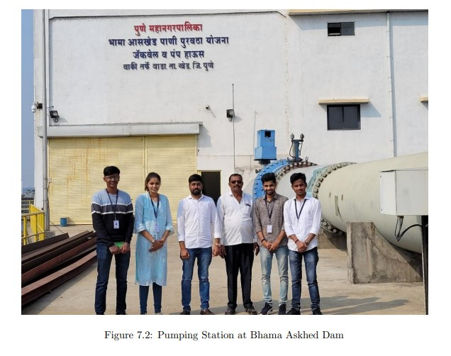
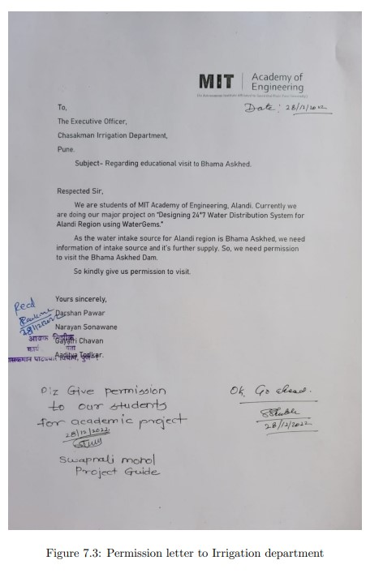
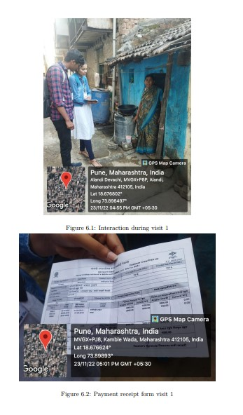
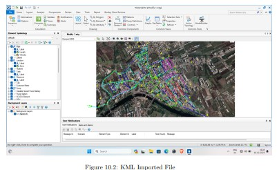
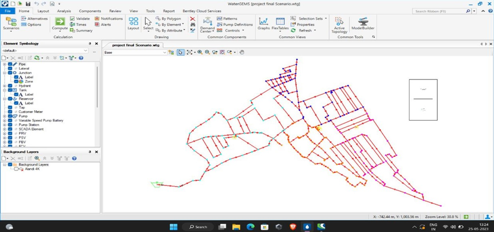
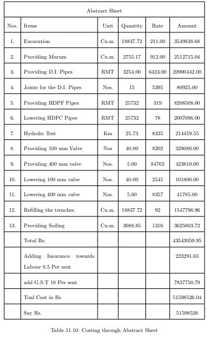

Problem statement Analysing the current water distribution system and designing a 24/7water distribution system for Alandi region
In this project we have studied the current water distribution system completely through the site visits and data collection. By performing various surveys, we have obtained information regarding: Identified People's Problems regarding the current water distribution network in Alandi and Extracted the required source information from Bhama Asked Dam Visit
  Based on that data and study we have successfully designed the 24x7 water destribution system for alandi region.
 Final Network designed in waterGems
Final Estimated cost for the Designed 24/7 Water Distribution system for Alandi Region is 51598526 Rs.
In conclusion, implementing a 24/7 continuous water distribution system for the Alandi region presents a transformative opportunity for enhancing the reliability, efficiency, and overall quality of water supply services. This initiative holds the potential to address longstanding challenges and significantly improve the lives of residents and businesses in the region. The move towards continuous water supply is more than a technological upgrade; it is a commitment to providing uninterrupted access to clean and safe water, fostering economic development, and ensuring the well-being of the community. By eliminating intermittent water supply, the system will not only meet the immediate needs of the population but also contribute to long-term sustainability, reducing water wastage, and improving resource management.
Future Scope
To Propose the design to the Government and implement the 24/7 water distribution system in Alandi and eliminate all the water related problems faced by people in Alandi.